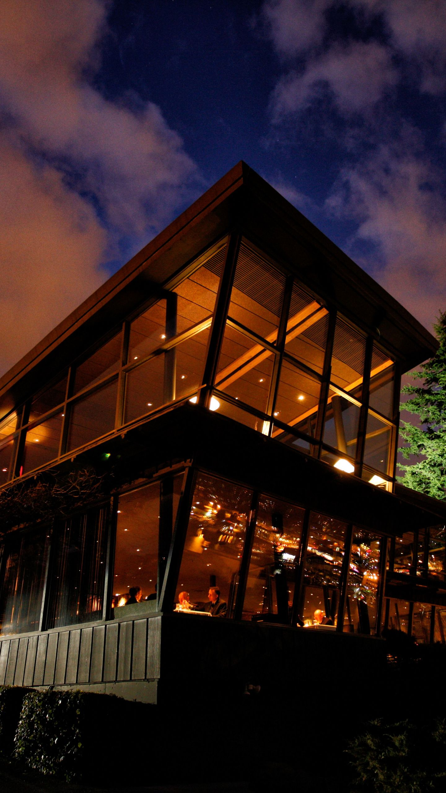

Canlis
Published • A legendary fine‑dining restaurant in Seattle, Washington. The site serves primarily to present the restaurant’s story, hospitality philosophy, menus, reservation options, and brand identity.
View Project